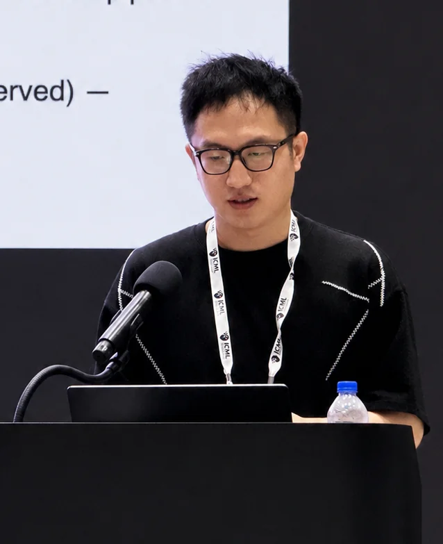
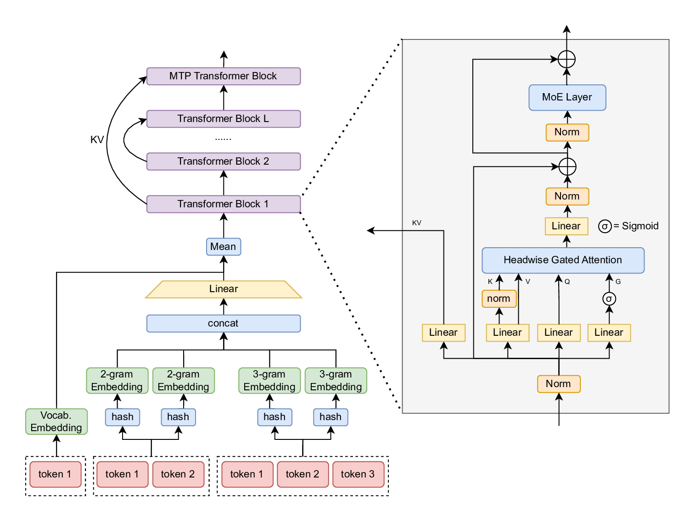
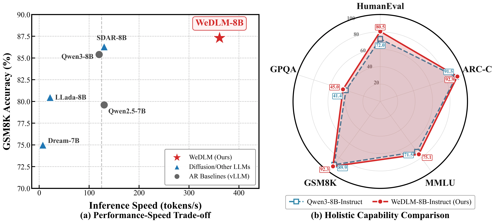
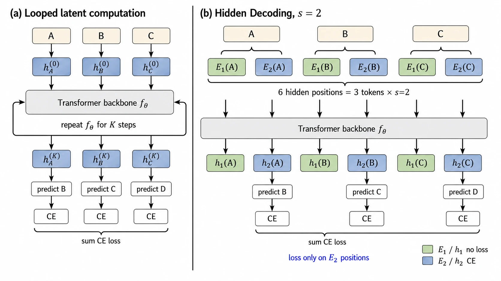

JOURNAL
MarkDiffusion accepted by the Journal of Machine Learning Research (JMLR).

Model Architecture & Pretraining Infrastructure
I build large-scale foundation models at WeChat AI, Tencent. As a core member of the WeLM pretraining team, I define WeLM’s model architecture and develop pretraining infrastructure. I am a core contributor to WeLM-80B and WeLM-600B, and the first contributor to WeDLM.
I received my Ph.D. from Tsinghua University in 2025. My research has received 3,000+ Google Scholar citations. I have authored 20+ first-author or corresponding-author papers, including oral and spotlight presentations at leading machine learning conferences such as ICML and ICLR.
RECENT MILESTONES
MarkDiffusion accepted by the Journal of Machine Learning Research (JMLR).
Locally Confident, Globally Stuck accepted to COLM 2026.
Released Hidden Decoding at Scale and its accompanying WeLM technical blog.
WeDLM accepted as an ICML 2026 Oral paper.
Three papers accepted to ICLR 2026.
Released WeDLM, with open-source code and model checkpoints.
Joined the WeLM team at WeChat AI, Tencent as a researcher.
Received my Ph.D. from Tsinghua University and the Outstanding Graduate of Beijing distinction.
FOUNDATION MODELS & RESEARCH
Core contributor · WeLM-80B & WeLM-600B
As a core member of the WeLM pretraining team, I am responsible for defining WeLM’s model architecture and work on large-scale pretraining infrastructure, connecting model design, training systems, and inference efficiency.

CORE CONTRIBUTOR
CORE CONTRIBUTOR
Reconciling Diffusion Language Models with Standard Causal Attention for Fast Inference
First contributor · First author
WeDLM brings diffusion language modeling to standard causal attention, enabling parallel generation while retaining the attention structure used by efficient inference systems.
Reported speedups against optimized vLLM baselines, depending on the generation workload.


LATENT COMPUTATION · 2026
First author · Foundation model capability scaling
A sequence-length scaling method that expands latent computation for large language models, demonstrated at 100B+ MoE scale.
SELECTED PUBLICATIONS
Representative work and first-author papers, grouped by research area.
Token-level importance weighting for direct preference optimization.
An open-source toolkit unifying 20 LLM watermarking methods, 12 evaluation tools, and automated evaluation pipelines.
Semantic-invariant watermarking for robust provenance of LLM-generated text.
Publicly verifiable watermarking for language models.
An open-source toolkit for generative watermarking of latent diffusion models.
THE JOURNEY
JUL 2025 — PRESENT
Researcher · WeLM Team
Core member of the WeLM pretraining team. Responsible for model architecture design; specializing in pretraining infrastructure.
Research Intern · Advisor: Dr. Meng Cao
Visiting Scholar · Advisor: Prof. Irwin King
Visiting Scholar · Advisor: Prof. Philip S. Yu
2020 — 2025
Ph.D. in Software Engineering
Advisor: Prof. Lijie Wen
Research in LLM alignment and
trustworthy LLMs.
2016 — 2020
B.E. in Software Engineering
LET’S BUILD WHAT’S NEXT
Open to research collaborations in foundation model architecture,
large-scale pretraining, and efficient generation.
{kind=link}